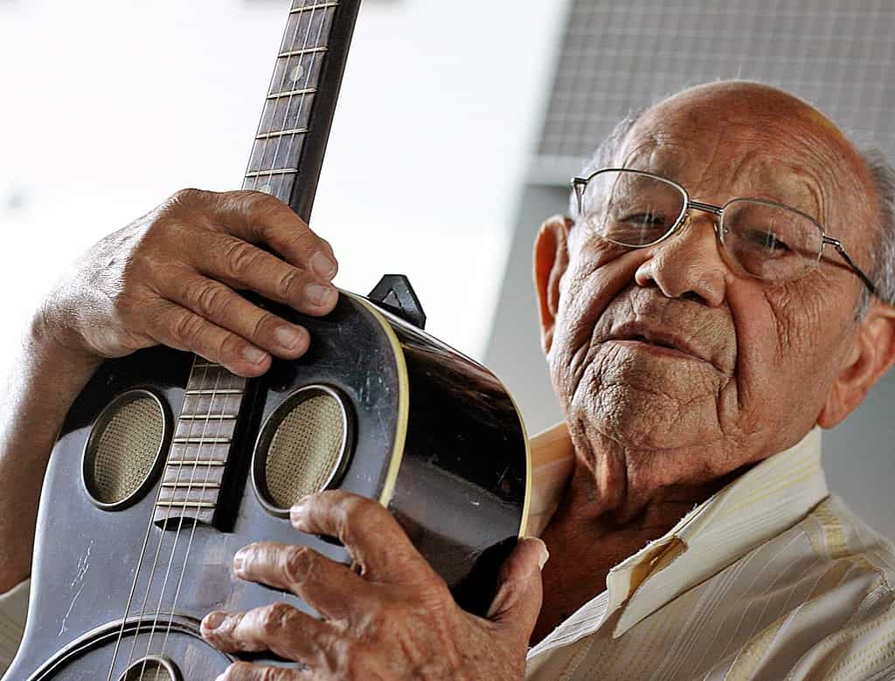

ZÉ MENEZES
Zé Menezes começou sua carreira de instrumentista de forma precoce: aos oito anos de idade, já tocava cavaquinho profissionalmente no cinema de Juazeiro do Norte. Nesta época, compôs sua primeira música ("Meus Oito Anos") a qual teve o privilégio de apresentar perante o Padre Cícero. Aos onze anos, já era músico da Banda Municipal de Juazeiro. Em companhia do primo Luís Roseo, Zé Menezes foi então residir em Fortaleza, onde passou um ano como locutor de um serviço de alto-falantes. Retornou posteriormente a Juazeiro, onde retomou sua carreira de músico em festas e cinemas. Em 1938, Roseo passou pela cidade como líder de uma banda de jazz. Zé Menezes decidiu-se a acompanhá-lo de volta à Fortaleza, onde, durante algum tempo, dedicou-se a aprender o ofício de alfaiate. Todavia, por volta de 1940 foi contratado como segundo violonista pela Ceará Rádio Clube e acabou por formar seu próprio grupo musical (um "regional"), com o qual se apresentou na emissora durante quatro anos. Passando por Fortaleza em 1943, para a inauguração do serviço de ondas curtas da Ceará Rádio Clube, o radialista César Ladeira conheceu o jovem músico e ofereceu-lhe um contrato com a Rádio Mayrink Veiga do Rio de Janeiro. Naquela cidade, angariou prestígio como solista e em 1945 formou o "Conjunto Milionários do Ritmo". Em 1947, Zé Menezes foi contratado pela Rádio Nacional, emissora onde permaneceria por cerca de 25 anos, apresentando-se inicialmente ao lado de Garoto no programa "Nada além de dois minutos". Em 1948 teve a primeira música gravada, o samba "Nova Ilusão" (escrito em parceria com Luiz Bittencourt) pelo grupo "Os Cariocas". A música fez tanto sucesso que acabou por converter-se numa espécie de prefixo do conjunto. Nos anos seguintes, seria regravada por Francisco Sergi e orquestra (1950) e Dick Farney e quinteto (1953). Fonte: Wikipédia
“Quando eu morrer, daqui a 100 anos, quero voltar músico de novo” - Zé Menezes
Partituras
 Zé Menezes – Bossa Nova No 1
Zé Menezes – Bossa Nova No 1